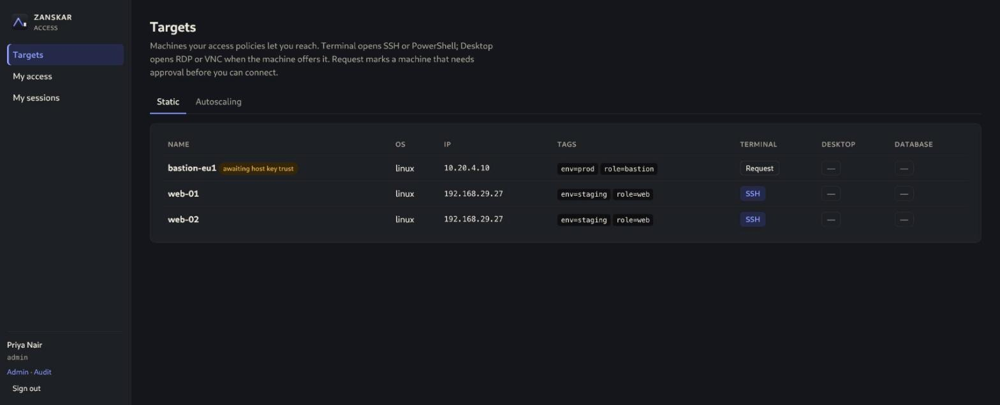
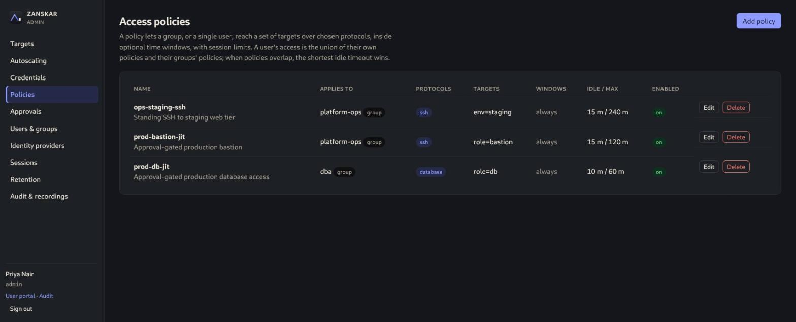
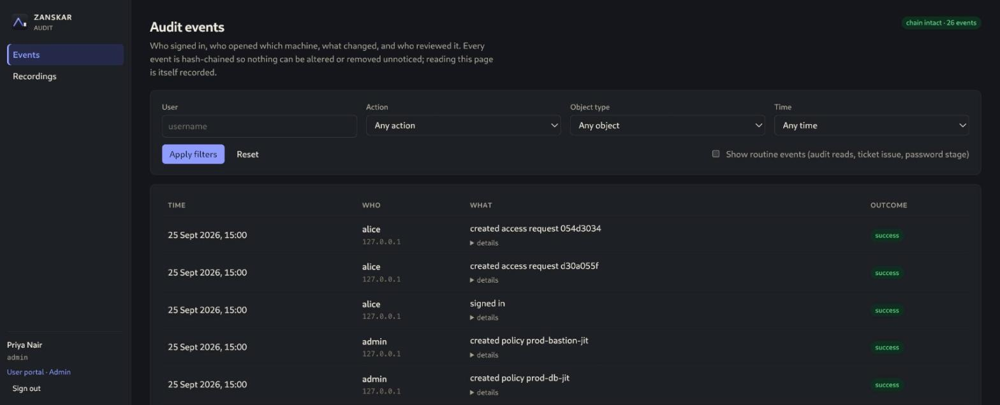

HOW-TO GUIDE
Run Zanskar day to day
Every task an administrator, auditor or user performs in Zanskar 1.0, in the order you meet them. It assumes the gateway is installed and you have signed in as the first admin.
Concepts in one minute
- Target
- A machine or database Zanskar can reach: a Linux or Windows host, a PostgreSQL endpoint, or an AWS Auto Scaling group whose healthy instances become targets.
- Credential
- How Zanskar authenticates to a target: a vaulted password, an SSH private key, an SSH certificate authority, or a Windows domain credential. Users never see it.
- Policy
- Who may reach which targets, over which protocols, when, with which session limits, and whether clipboard and file transfer are allowed. A policy can also require approval for each session.
- Roles
- admin configures and reviews, auditor reviews only, user connects. The UI has three portals to match: Admin, Audit and the user portal. Links to switch between them sit under your name in the sidebar.
Sign in and enroll MFA
- Open the gateway URL and enter your username and password.
- On first sign-in Zanskar shows a QR code. Scan it with any TOTP app (1Password, Google Authenticator, Aegis) and enter the six-digit code. Enrollment completes only after a valid code, and the step survives a page refresh.
- Every later sign-in asks for password then code. Sign out from the sidebar; sessions also expire on idle.
Signing in through your identity provider instead? An admin adds it under Identity providers (OIDC or LDAP/Active Directory) and maps provider groups to Zanskar roles. Provider users still enroll TOTP unless the provider handles MFA and the admin sets the mapping accordingly.
Add users and groups
- Users & groups in the admin sidebar. Create a user with a username, display name, initial password and one or more roles. The user changes the password and enrolls MFA at first sign-in.
- Create a group, then add members. Policies are written against groups (or a single user), so a sensible starting set is one group per team that needs access, plus one for approvers.
- Disable a user to block sign-in without deleting history; revoke their sessions from the same page if they are connected right now.
Store a credential
Credentials in the admin sidebar. Give it a name, choose the type, and paste the secret once. It is sealed with envelope encryption under the master key and the API never returns it again, only its metadata.
| Type | Use it for |
|---|---|
| Password | SSH password login, WinRM and RDP domain or local accounts, PostgreSQL users. Username plus password. |
| SSH key | SSH with a private key. Paste an existing key or let Zanskar generate an Ed25519 key and copy the public half into the target's authorized_keys. |
| SSH certificate authority | Keyless SSH: Zanskar mints a short-lived certificate per session. Install the CA public key as a TrustedUserCAKeys on targets. |
| EC2 Instance Connect | Autoscaling groups. No stored secret; Zanskar pushes a one-time key through the AWS API using the cross-account role. |
Credentials can be rotated in place. A rotation keeps the credential's id, so every target bound to it picks up the new secret immediately.
Enroll targets
Targets in the admin sidebar, then Add target. A name, an address and an OS family are enough to start; tags such as env=prod or role=db are what policies select on, so tag consistently from day one.
Linux over SSH
- Add the target with OS family linux and the SSH port if it is not 22.
- Open the target and bind a credential to the SSH protocol.
- Probe. Zanskar connects, learns which protocols the host offers, and captures the host key fingerprint. The key is shown as unknown until you trust it.
- Compare the fingerprint with the host out of band, then Trust it. From now on a changed host key blocks every connection to that target until an admin re-approves it.
Windows over RDP and WinRM
Same flow with OS family windows. The probe captures the RDP and WinRM listener certificate fingerprints instead of an SSH key, and pins those. Bind a domain or local credential to each protocol you want to offer. RDP needs guacd configured on the gateway; WinRM terminals do not.
PostgreSQL, including Amazon RDS
- Add the target with engine postgres, the endpoint hostname and port 5432. Optionally record the engine version so the matching
psqlclient is used. - Bind a password credential holding the database user.
- Ensure Docker or Podman is available on the gateway host. Each session starts a client container connected to a credential-holding proxy sidecar on a private per-session network; the container the user types into never receives the password.
AWS Auto Scaling groups
- Create an IAM role in the target account that the gateway's principal can assume, with permission to describe the group and send EC2 Instance Connect keys. The gateway's principal is shown under Autoscaling.
- Add the group with region, name and role ARN, then Sync. Healthy instances appear to users under the Autoscaling tab of their Targets page.
- When the instance a user is on is terminated, their session shows a failover prompt to reconnect to another healthy instance.

Write an access policy
Policies, then Add policy. A policy binds one group or one user to a set of targets chosen by tag, over the protocols you tick.
- Targets by tag:
env=stagingselects every target carrying that tag now and in the future. - Time windows: optional; for example weekdays 08:00 to 20:00 in a named time zone. Outside the window the target is not listed.
- Idle and maximum session: a session ends after the idle timeout or the maximum duration, whichever comes first. When several policies apply, the shortest idle timeout wins.
- Clipboard and file transfer: off unless enabled. File transfer switches on the SFTP panel for SSH and drive redirection for RDP.
- Require MFA: demand a fresh TOTP code at connect time, not just at sign-in.
- Require approval: turns the policy into eligibility. Members can request access but cannot connect until an admin approves. See just-in-time access.

Connect to a target
- In the user portal, Targets lists everything your policies allow, with one button per protocol. Click SSH or PowerShell for a terminal, RDP or VNC for a desktop, psql for a database.
- The session opens in a new tab. A header shows the target, protocol, elapsed and idle time, and a recorded marker. The full-screen button hides everything but the session.
- For SSH targets whose policy allows file transfer, Files opens a panel beside the terminal: browse the remote home directory, download a file, or upload one. Transfers are audited with path and size and are not part of the recording.
- Disconnect ends the session. Idle and maximum limits end it for you; the recording is finalised either way.
My sessions shows your own active and past sessions. If the host key of a target changed since it was trusted, the connection is refused and the target shows awaiting host key trust until an admin reviews it.
Just-in-time access: request, approve, revoke
Approval-gated targets show Request instead of a connect button.
- User: click Request, write the reason (it is recorded on the request and in the audit log) and choose a duration up to the policy's maximum. The request appears under My access as pending.
- Admin: Approvals lists pending requests with user, target, protocol, reason and duration. Approve starts the clock; Deny records a decision without access.
- User: the target's button becomes active for the granted window. Connect as many times as needed until it expires. Expiry ends the grant automatically, and the sweeper marks it expired within a minute.
- Admin: Revoke an active grant from the same page to end it early. Standing access from other policies is unaffected.
Every step is an audit event: access.request.create, approve, deny, revoke, expire. Together with the recorded session this is the evidence trail auditors ask for.
Review recordings and the audit log
The Audit portal is available to admins and auditors. Reading anything here is itself audited.
- Events: who signed in, who opened which target, what changed, who reviewed what. Filter by user, action, object type and time. The header shows chain intact when the hash chain verifies.
- Recordings: every session with user, target, protocol, duration and how it ended. Review plays a terminal recording with a command list you can click to seek, or a desktop recording as video-style playback.
- Live: from the admin Sessions page an admin can terminate a session with a reason; an auditor can shadow it read-only while it runs.

For your SIEM, set ZANSKAR_SIEM_SYSLOG_ADDR (syslog/CEF) or ZANSKAR_SIEM_WEBHOOK_URL plus ZANSKAR_SIEM_WEBHOOK_SECRET (signed JSON). Verify the chain from the command line on a schedule:
sudo bash -c 'set -a; . /etc/zanskar/env; set +a; runuser -u zanskar -- zanskar audit verify'Backups and retention
zanskar backup writes a consistent snapshot of the SQLite database plus the recordings directory while the service runs. The master key is never included; keep it escrowed separately. Restore stops the service first.
sudo bash -c 'set -a; . /etc/zanskar/env; set +a; runuser -u zanskar -- zanskar backup --out /secure/zanskar-$(date +%F).tar.gz'Retention in the admin sidebar sets a maximum age and a maximum total size for recordings. An hourly sweep deletes the oldest recordings beyond either limit and audits each deletion. Set it to match your compliance obligations before the disk does it for you.
CLI reference
All commands read the same ZANSKAR_* environment as the server. On the package install, wrap them as shown above so they run as the zanskar user with /etc/zanskar/env loaded.
| Command | What it does |
|---|---|
zanskar serve | Run the gateway. Refuses to start with migrations pending. |
zanskar init | Write the environment file interactively or from flags; generates the master key. |
zanskar migrate | Apply pending schema migrations. Forward-only. |
zanskar admin create | Create an admin user; password from ZANSKAR_ADMIN_PASSWORD. |
zanskar admin reset-mfa | Clear a user's authenticator so they re-enroll; audited. |
zanskar audit verify | Recompute and verify the audit hash chain. |
zanskar backup / restore | Snapshot or restore the database and recordings. Key never archived. |
zanskar keygen | Print a fresh master key. |
zanskar version | Print the running version. |
The HTTP API behind the UI is documented in OpenAPI 3.1; everything the console does can be scripted against it.